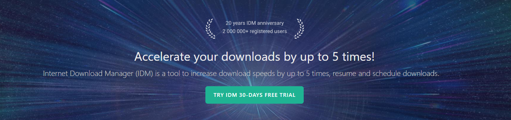
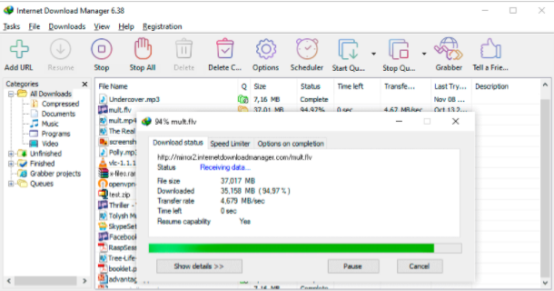
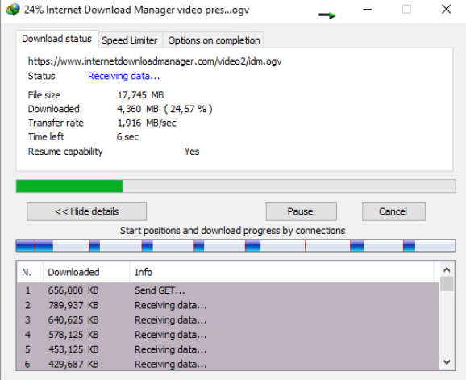

| Home | News | Features | Language | Contact | Download | Support | |
|  | |||||||
Download faster and more reliablyInstall Internet Download Manager (IDM) to stop waiting for your downloads. You will be truly amazed how fast IDM downloads your files. IDM will also repair broken and resume interrupted downloads due to lost connection, network problems, computers shutdown, or unexpected power outages. |
 |
Powerful Download engineOur powerful download engine uses unique algorithms to recieve internet data in a fastest possible way. IDM will accelarate downloads all times because of its inovative dynamic file segmentation technology. Unlike other download managers and accelerators, IDM segments downloads files dinamically during download process, and it reuses available connection without additional connect and login stages to archieve the best possible acceleration performance. Our engineers have a lot of experience in download acceleration, and we constantly improve this download engine since 1999. |
 |